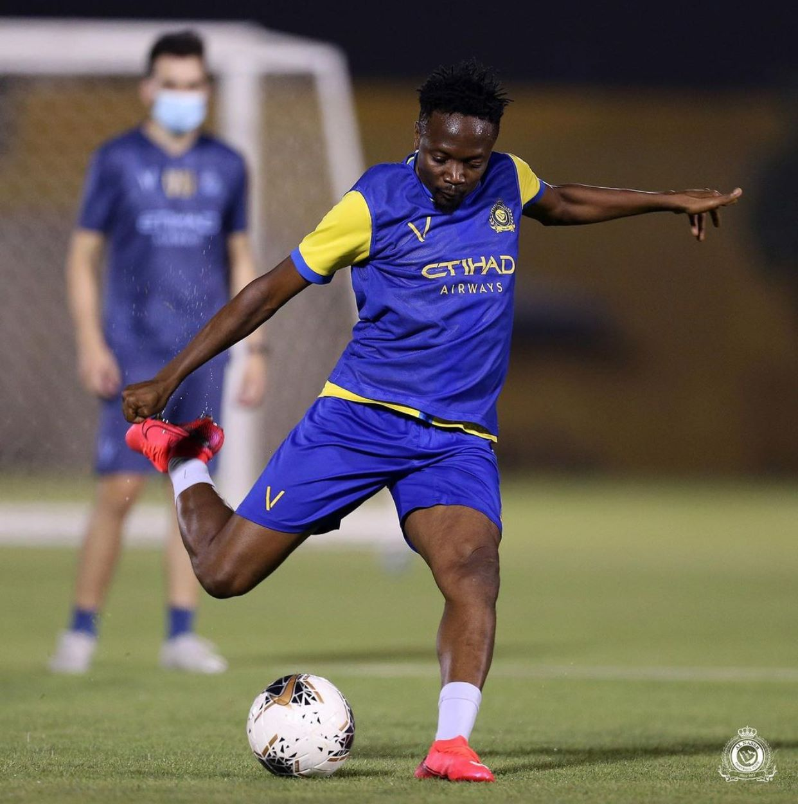

AHMED MUSA 718
Super Eagle Captain
|
|
|
||||||
|
||||||||
|
GALLERY |
|  | .jpg) |
.jpg) |
.jpg) |
.jpg) |
.jpg) |
.jpg) |
.jpg) |
Ahmed Musa (born 14 October 1992) is a Nigerian professional footballer who plays as a forward and left winger for Nigerian club Kano Pillars and the Nigeria national team. Musa became the first Nigerian to score more than once in a FIFA World Cup match, after scoring twice against Argentina in the 2014 FIFA World Cup. Musa is also the first Nigerian to score in two FIFA World Cup competitions, after scoring twice against Iceland in the group stage of the 2018 FIFA World Cup. Musa was a member of the Al Nassr squad that won the Saudi Premier League and Saudi Super Cup, both in 2019.
Early career
Musa began his career in the GBS Football Academy.
Breakthrough in Nigeria
In 2008, Musa was loaned to JUTH F.C. where he played 18 games, scoring four goals in his first two professional seasons for the Healers. He was subsequently loaned to Kano Pillars F.C., in the 2009–10 season where he set the league record scoring multiple crucial goals as Pillars finished second.
Musa held the record for the highest goals ever scored in one season in the history of the Nigeria Premier League until November 2011, when Jude Aneke of Kaduna United F.C. set a new record of 20 goals.
VVV-Venlo
Musa was transferred to Dutch club VVV-Venlo in summer 2010, but the move was held up because he was only 17 years of age and therefore not eligible for an ITC in accordance with the current FIFA rules. He was officially eligible to play for VVV-Venlo on 14 October 2010 when he eventually turned 18 years of age. Less than a week after arriving at the club, Musa made his debut for VVV-Venlo against FC Groningen on 30 October. He started the game for VVV-Venlo, was fouled in the 50th minute and received a penalty kick.
Rated by Goal.com amongst the Hot 100 young football stars in the world to watch in 2011, Lolade Adewuyi of Goal.com put him on the list of Top Ten Nigerian International Players of 2010 and was also included in IFFHS list of the best 140 players in the world. On 8 March 2011, Ahmed Musa won the AIT footballer of the year award (national). The ceremony was held at the Presidential Hotel, Port Harcourt, Rivers State. The event had in attendance, BBC African Footballer of the Year winner, Ghanaian Asamoah Gyan and the top officials from the Nigerian football federation including the president Aminu Maigari.
In April, Venlo's football director Mario Captien said that representatives of Tottenham Hotspur had visited the club regarding the player, also Ajax scout Tijani Babangida said that Ajax were interested in Musa but that the outcome would be decided at the end of the season.
On 1 May 2011, Musa hit a brace to sink Feyenoord 3–2 and end any lingering fears of automatic relegation from the Eredivisie.
In August 2011, after returning from the 2011 FIFA U-20 World Cup in Colombia, Musa made his first appearance of the 2011–12 season at home against AFC Ajax and scored two goals.
In September VVV-Venlo chairman Hai Berden disclosed on Eredivisie Live that VVV-Venlo had turned down a last minute bid of €10 million euros for Musa from the Bundesliga. The name of the Bundesliga club was not disclosed.
CSKA Moscow
On 7 January 2012, Musa signed for Russian side CSKA Moscow for an undisclosed fee.
On 17 September 2014 he scored an 82nd minute consolation goal in a 5–1 UEFA Champions League away rout to A.S. Roma. On 1 June 2015, Musa signed a new four-year contract with CSKA until the end of the 2018–19 season. He finished the 2015–16 Russian Premier League season as the 5th highest scorer, becoming one of only seven players aged 23 or younger to reach double figures for goals in each of the past two seasons in Europe's top seven leagues.
Leicester City
On 8 July 2016, Musa moved to Leicester City for a club record £16.6 million. He scored his first goals with the club in a friendly against Barcelona in the 2016 International Champions Cup which ended in a 4–2 loss. He made his Premier League debut on 13 August 2016 in the club's opening day 2–1 defeat to Hull City. He scored his first Premier League goal with the opener in a 3–1 victory over Crystal Palace on 22 October 2016.
By January 2017, Musa was yet to register an assist for the club, contributing an average of 0.5 key passes, 0.3 crosses and 1.2 successful dribbles per game.
Loan to CSKA Moscow
On 30 January 2018, Musa returned to CSKA Moscow on loan for the remainder of the 2017–18 season. On 4 August 2018, Musa moved to Saudi Arabian side Al Nassr on a permanent deal.In October 2020, Al Nassr announced that Musa was leaving. It was reported that Premier League club West Bromwich Albion was expected to complete a move for Ahmed Musa in the January transfer window for the 2020–21 season.
Kano Pillars
On 13 April 2021, Musa rejoined Nigerian club Kano Pillars until the end of the 2020–21 season.
PERSONAL LIFE
Born: 14 October 1992 (age 28 years), Jos
Current team: Nigeria national football team (#7 / Forward)
Spouse: Juliet Ejue (m. 2017), Jamila Musa (m. 2013–2017)
Children: Halima Musa, Ahmed Musa Junior.
Parents: Sarah Moses, Alhaji Musa.
Siblings: Umar Musa, Zainab Musa, Lawan Musa. Read More